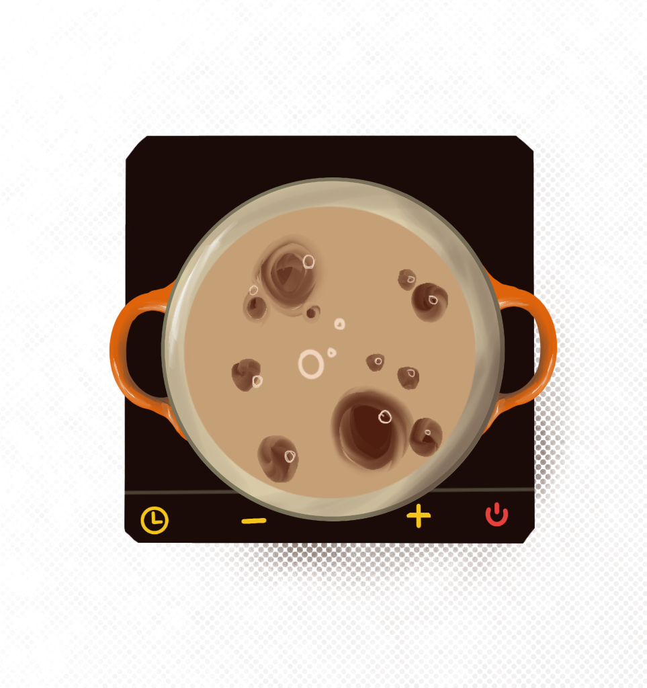
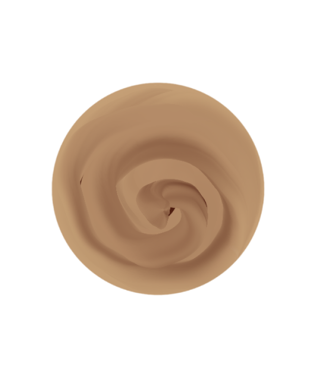

Lets Make Ramen
Continue
Click the Ingredients to saute

Ginger
Garlic
Click to add the other ingredients
Simmer for 15 minutes
Click to Stir
 Boil the Noodles
Combine noodles and broth

Choose your toppings
Nori
Lime
Eggs
Mushrooms
Cilantro
NARUTOMAKI
Green Onion
Chasu
Sesame